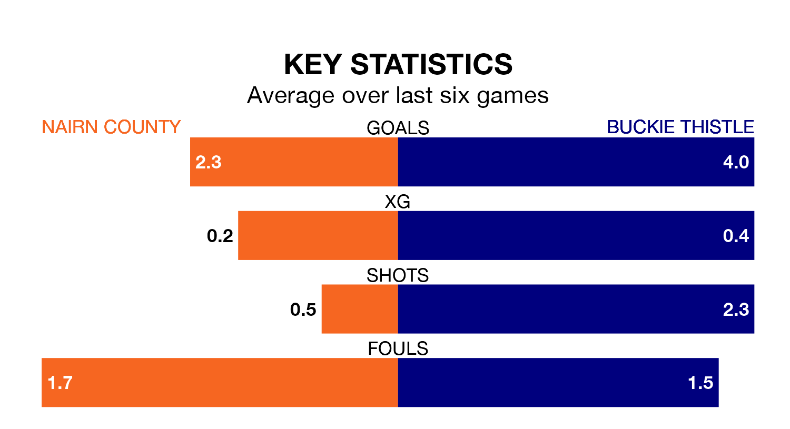

Buckie Thistle visit Nairn County at Station Park on Saturday on the back of seven consecutive wins in Highland Football League.
It means Buckie Thistle have picked up the maximum 21 points from their last seven games, and they face a Nairn side who also won their last match, and have collected 13 points from the last possible 21.
In the last 10 years, Nairn and Buckie Thistle have played each other on 12 occasions. Nairn won three of them and Buckie Thistle nine.
On average, Nairn scored 1.8 goals and Buckie Thistle 2.8 in those matches.
Their last meeting was on September 30, when Buckie Thistle won 6-0 at home.
With 47 goals in 14 games so far this season, Buckie Thistle are scoring more than average in the league with 3.4 goals per game. And they are conceding fewer than average, letting in 14 goals at a rate of 1.0 per game.
Nairn are also above average scorers, with 2.0 goals per game, compared to a league average of 1.9. They have conceded 1.7 goals per game.
The visitors are fifth in the table after 14 games, of which they have won 12 and drawn one, earning 37 points.
County are one place behind Buckie Thistle in sixth, with 12 wins and one draw putting them on the same number of points.
Nairn's last match was on Wednesday, a 5-1 win against Lossiemouth.
Buckie Thistle beat Huntly 3-2 last time out, on January 13.
Updated: 10:40 (UTC), 01/02/24